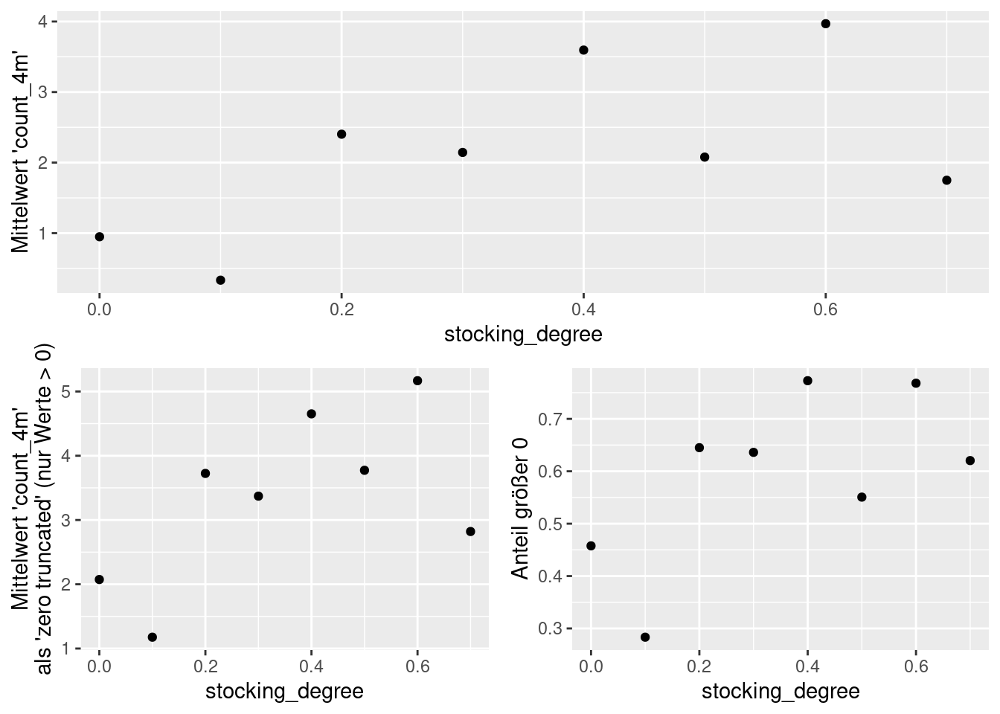

Zähldatenmodelle
10. Juni 2024 (Version 0.1)
All contents are licensed under CC BY-NC-ND 4.0.
1 Intro
- Zähldaten \(y=0, 1, 2, \ldots\) sind in vielen Verjüngungsaufnahmen von wesentlicher Bedeutung.
- Das klassische Poisson-Regressionsmodell für die Modellierung von Zähldaten ist oft nicht ausreichend, da empirische Zähldatensätze typischerweise Überdispersion (größere Streuung als es der Erwartungswert zulässt) und/oder eine übermäßige Anzahl von Nullwerten aufweisen.
- Überdispersion kann durch die Erweiterung des grundlegenden Poisson-Regressionsmodells auf verschiedene Weise behoben werden, beispielsweise durch die Schätzung eines zusätzlichen Dispersionsparameters in einem Quasi-Poisson-Modell.
- Alternativ kann die Negative Binomialverteilung (NB) als formellere Lösung verwendet werden.
- Beide Alternativen gehören zur Familie der generalisierten linearen Modelle (GLMs).
- Obwohl diese Modelle das Auftreten von Überdispersion gut erfassen können, reichen sie für die Modellierung ‘überschüssiger’ Nullwerte oft nicht aus. – Als Lösung wird eine zweite Komponente zur Modellierung dieser Nullwerte angehen.
- Hurdlemodelle – in ihrer allgemeinsten Form – kombinieren eine linkstrunkierte Zählverteilung mit einer rechtszensierten ‘Hurdlekomponente’.
- Zero-Inflation-Modelle verfolgen einen anderen Ansatz, indem sie eine volle Zählverteilung mit einer Punktmasse bei Null kombinieren und so ein Mischungsmodell bilden.
2 Verteilungsmodelle
2.1 Poisson
Dichte: \[\begin{equation} f_{Pois}(y\,|\,\lambda) = \frac{\lambda^y e^{-\lambda}}{y!}, \quad \text{mit} \quad y = 0, 1, 2, \ldots, \end{equation}\] Erwartungswert: \(\mathsf{E}(\mathrm{Y}) = \lambda\)
Varianz: \(\mathsf{VAR}(\mathrm{Y}) = \lambda\).
2.2 Negativ Binomial
Dichte: \[\begin{equation} f_{NB}(y\,|\,\mu,\theta) = \frac{\Gamma(\theta + y)}{\Gamma({\theta}) \cdot y!} \cdot \frac{\mu^y \cdot \theta^\theta}{(\mu + \theta)^{\theta + y}}, \quad y = 0, 1, 2, \dots \end{equation}\]
Erwartungswert \(\mathsf{E}(\mathrm{Y}) = \mu\)
Varianz \(\mathsf{VAR}(\mathrm{Y}) = \mu + \mu^2 / \theta\).
2.3 Zero-Truncated Poisson
Dichte \[\begin{equation} f_{ZTP}(y\,|\,\lambda) = \frac{f_{Pois}(y\,|\,\lambda)}{1 - f_{Pois}(0\,|\,\lambda)} \quad \text{for} \quad y = 1, 2, \ldots \end{equation}\] wobei \(f_{Pois}\) die Dichte der vollen Poissonverteilung ist.
Erwartungswert \(\mathsf{E}(y) = \mu = \lambda / (1 - \exp(-\lambda))\)
Varianz: \(\mathsf{VAR}(y) = \mu \cdot (\lambda + 1 - \mu)\), wobei \(\lambda\) der Erwartungswert der vollen Poissonverteilung ist.

2.4 Zero-Truncated Negativ Binomial
Dichte \[\begin{equation} f_{ZTNB}(y\,|\,\mu,\theta) = \frac{f_{NB}(y\,|\,\mu, \theta)}{1 - f_{NB}(0\,|\,\mu, \theta)}, \quad y = 1, 2, \dots \end{equation}\]
Erwartungswert \[\begin{equation} \mathsf{E}(\mathrm{Y}) = \frac{\mu}{1 - f_{NB}(0\,|\,\mu,\theta)} = \frac{\mu}{1 - \left( \frac{\theta}{\mu + \theta} \right)^\theta}, \end{equation}\] wobei \(f_{NB}\) die Dichte der vollen Negativ-Binomialverteilung ist.
Varianz: \[\begin{align} \mathsf{VAR}(\mathrm{Y}) & = \frac{\mu}{1 - f_{NB}(0\,|\,\mu,\theta)} \cdot \left( 1 + \frac{\mu}{\theta} + \mu - \frac{\mu}{1 - f_{NB}(0\,|\,\mu,\theta)} \right) \\ & = \frac{\mu}{1 - \left( \frac{\theta}{\mu + \theta} \right)^\theta} \cdot \left( 1 + \frac{\mu}{\theta} + \mu - \frac{\mu}{1 - \left( \frac{\theta}{\mu + \theta} \right)^\theta} \right) \end{align}\]
2.5 Vergleich bisher …
2.6 Hurdle-Modelle
Hurdle models combine a Bernoulli distribution with a Zero-Truncated (count) distribution.
2.6.1 Binomial
The binomial distribution with size \(= n\) and prob \(= \pi\) has the density \[\begin{equation} f_{Binom}(y\,|\,\pi,n) = {n \choose y} {\pi}^{y} {(1-\pi)}^{n-y}, \quad \text{for} \quad y = 0, \ldots, n, \end{equation}\] with expected value \(\mathsf{E}(\mathrm{Y}) = n \cdot \pi\) and variance \(\mathsf{VAR}(\mathrm{Y}) = n \cdot \pi \cdot (1 - \pi)\).
For \(n=1\), the Binomial is called Bernoulli distribution.
2.6.2 Hurdle Poisson
The hurdle poisson has density \[\begin{equation} f(y\,|\,\pi,\lambda) = \begin{cases} 1-\pi & y = 0 \\ \pi \cdot \frac{f_{Pois}(y\,|\,\lambda)}{1 - f_{Pois}(0\,|\,\lambda)} & y > 0 \end{cases} \end{equation}\] with expected value \[\begin{equation} \mathsf{E}(\pi,\lambda) = \frac{\pi}{1-e^{-\lambda}} \cdot \lambda \end{equation}\] and variance \[\begin{equation} \mathsf{VAR}(\pi,\lambda) = \frac{\pi\cdot\lambda}{1-e^{-\lambda}} \cdot \left(\lambda + 1 - \frac{\pi\cdot\lambda}{1-e^{-\lambda}}\right). \end{equation}\]
2.6.3 Hurdle Negative Binomial
The hurdle negative binomial has density \[\begin{equation} f(y\,|\,\pi, \mu, \theta) = \begin{cases} 1-\pi & y = 0 \ \pi \cdot \frac{f_{NB}(y\,|\,\mu,\theta)}{1-f_{NB}(0\,|\,\mu,\theta)} & y > 0 \end{cases} \end{equation}\] with expectation \[\begin{equation} \mathsf{E}(\pi,\mu,\lambda) = \frac{\pi}{1-f_{NB}(0\,|\,\mu,\theta)} \cdot \mu \end{equation}\] and variance \[\begin{equation} \mathsf{VAR}(\pi,\mu,\lambda) = \frac{\pi\cdot\mu}{1-f_{NB}(0\,|\,\mu,\theta)} \cdot \left(1+\frac{\mu}{\theta}+\mu-\frac{\pi\cdot\mu}{1-f_{NB}(0\,|\,\mu,\theta)}\right) \end{equation}\]
3 Anwendungsbeispiel
Wir schätzen zur Veranschaulichung nur ein Modell mit quadratischem Bestockungsgrad:
Deskriptiv exemplarisch nur für die ersten 16 Plots:
sdf <- subset(df, stand_ID %in% c("stand01", "stand02", "stand03", "stand04",
"stand05", "stand06", "stand07", "stand08",
"stand09", "stand10", "stand11", "stand12",
"stand13", "stand14", "stand15", "stand16"))
ggplot(data = sdf, aes(x = count_4m)) +
geom_bar() +
facet_wrap(~ stand_ID)ggplot(data = sdf,
aes(y = count_4m, x = stocking_degree)) +
geom_point() +
facet_wrap(~ stand_ID) +
labs(subtitle = "Only first 16 plot_IDs shown.")Deskriptiv aufgeteilt für die drei Modellkomponenten in der Hurdle-Sicht:
dd <- ddply(df, c("stocking_degree"), summarise,
mean_count = mean(count_4m),
mean_count_greater_0 = mean(count_4m[count_4m > .5]),
prob_greater_0 = mean(as.numeric(count_4m > .5)))
cowplot::plot_grid(ggplot(data = dd, aes(x = stocking_degree)) +
geom_point(aes(y = mean_count)) +
labs(y = "Mittelwert 'count_4m'"),
cowplot::plot_grid(ggplot(data = dd, aes(x = stocking_degree)) +
geom_point(aes(y = mean_count_greater_0)) +
labs(y = "Mittelwert 'count_4m'\nals 'zero truncated' (nur Werte > 0)"),
ggplot(data = dd, aes(x = stocking_degree)) +
geom_point(aes(y = prob_greater_0)) +
labs(y = "Anteil größer 0"), nrow = 1), nrow = 2)
Modellformel:
‘Alle’ Modelle einmal durch:
m_pois <- glm(frmla, data = df, family = poisson)
m_qpois <- glm(frmla, data = df, family = quasipoisson)
m_nb <- glm.nb(frmla, data = df)
m_hurdle_poisson <- hurdle(frmla, data = df, dist = "poisson")
m_hurdle_nb <- hurdle(frmla, data = df, dist = "negbin")
m_zeroinfl_poisson <- zeroinfl(frmla, data = df, dist = "poisson")
m_zeroinfl_nb <- zeroinfl(frmla, data = df, dist = "negbin")Likelihood-Vergleich:
ml <- list("Pois" = m_pois,
"Quasi-Pois" = m_qpois,
"NB" = m_nb,
"Hurdle-NB" = m_hurdle_nb,
"ZI-NB" = m_zeroinfl_nb,
"Hurdle-Poisson" = m_hurdle_poisson,
"ZI-Poisson" = m_zeroinfl_poisson)
rbind(logLik = sapply(ml, function(x) round(logLik(x), digits = 0)),
Df = sapply(ml, function(x) attr(logLik(x), "df")))## Pois Quasi-Pois NB Hurdle-NB ZI-NB Hurdle-Poisson ZI-Poisson
## logLik -4863 NA -3708 -3688 -3688 -4054 -4054
## Df 3 4 4 7 7 6 6Veranschaulichung des Hurdle-Negativ-Binomial-Modells:
## count_(Intercept) count_poly(x, degree = 2)1
## 1.105 10.096
## count_poly(x, degree = 2)2 zero_(Intercept)
## -9.612 0.557
## zero_poly(x, degree = 2)1 zero_poly(x, degree = 2)2
## 10.167 -9.939x_seq <- x_seq_plot <- seq(min(df$x), max(df$x), length.out = 25)
x_seq_plot <- (x_seq_plot * sd(df$stocking_degree)) + mean(df$stocking_degree)
d_pre <- data.frame(x = x_seq)
d_pre$x <- x_seq_plot
X <- predict(poly(df$x, degree = 2), x_seq)
d_pre$eta_1 <- coef(m_hurdle_nb)["count_(Intercept)"] +
coef(m_hurdle_nb)["count_poly(x, degree = 2)1"] * X[, 1] +
coef(m_hurdle_nb)["count_poly(x, degree = 2)2"] * X[, 2]
d_pre$eta_2 <- coef(m_hurdle_nb)["zero_(Intercept)"] +
coef(m_hurdle_nb)["zero_poly(x, degree = 2)1"] * X[, 1] +
coef(m_hurdle_nb)["zero_poly(x, degree = 2)2"] * X[, 2]d_pre$f0 <- pnbinom(0, mu = exp(d_pre$eta_1), size = m_hurdle_nb$theta)
d_pre$estim_E_trunc_0 <- exp(d_pre$eta_1)/(1 - d_pre$f0)
## predict(m_hurdle_nb, newdata = d_pre, type = "mean", model = "full") ## same as:
d_pre$estim_P_greater_0 <- plogis(d_pre$eta_2)
d_pre$estim_E_full <- d_pre$estim_E_trunc_0 * d_pre$estim_P_greater_0
cowplot::plot_grid(ggplot(data = dd, aes(x = stocking_degree)) +
geom_point(aes(y = mean_count)) +
geom_line(data = d_pre, aes(x = x, y = estim_E_full)) + ## eta_count
labs(y = "Mittelwert 'count_4m'"),
cowplot::plot_grid(ggplot(data = dd, aes(x = stocking_degree)) +
geom_point(aes(y = mean_count_greater_0)) +
geom_line(data = d_pre, aes(x = x, y = estim_E_trunc_0)) + ## exp(eta_1)/(1 - f0)
labs(y = "Mittelwert 'count_4m'\nals 'zero truncated' (nur Werte > 0)"),
ggplot(data = dd, aes(x = stocking_degree)) +
geom_point(aes(y = prob_greater_0)) +
geom_line(data = d_pre, aes(x = x, y = estim_P_greater_0)) + # plogis(eta_2)
labs(y = "Anteil größer 0"),
nrow = 1), nrow = 2)
References
Private webpage: uncertaintree.github.io↩︎